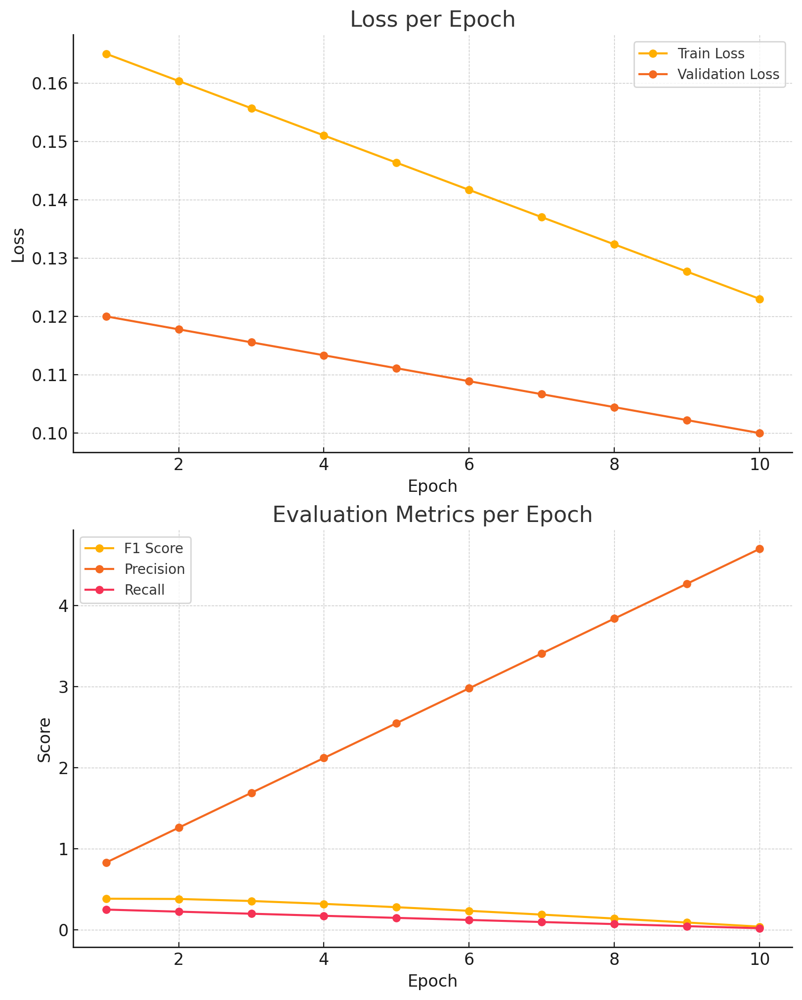

Demonstration
Try It Yourself:
{% if top3 %}Top 3 Predicted Genres:
-
{% for genre, prob in top3 %}
- {{ genre }} — {{ "%.2f"|format(prob * 100) }}% {% endfor %}
The model predicts movie genres using either the poster, the synopsis, or both. Results show the top 3 highest predicted probabilities.
Introduction & Objectives

Project Motivation: In the ever-expanding world of streaming and digital content, accurate genre classification is critical for recommendation engines and content discovery. Traditional single-modality classifiers—relying on either text or image data—often miss nuanced genre cues. By combining plot synopses (text) with movie posters (visual), our multi-modal approach captures both narrative themes and visual aesthetics, leading to more robust predictions.
Key Objectives:
- Develop and benchmark three distinct models: text-only, image-only, and a fusion model combining both.
- Curate a comprehensive dataset of over 180,000 films with clean plot summaries and high-quality posters.
- Evaluate using multi-label metrics—Precision, Recall, and F1-score—to handle overlapping genres.
- Deploy an interactive web interface via Flask to demonstrate live predictions, showcasing the top 3 genre probabilities.
Dataset Description

Our dataset integrates data from three primary sources:
- TMDb API: Provides plot synopses and genre labels for over 500,000 titles.
- OMDb API: Supplies poster URLs and additional metadata for cross-validation.
- IMDb Dataset: Offers genre taxonomy and unique identifiers to merge records reliably.
Cleaning & Preparation
- Removed entries with missing or placeholder synopses ('N/A' or blank).
- Filtered out genres not present in our curated list of 18 target labels.
- Normalized text by lowercasing, stripping HTML tags, and truncating to 256 tokens.
- Resized poster images to 224×224 pixels, applied normalization to match ImageNet standards.
- Split data into 167,626 training samples and 20,395 validation samples, preserving genre distributions via stratified sampling.
Methodology
We implemented three models using PyTorch and Hugging Face Transformers, each optimized for multi-label classification with binary cross-entropy loss.
1. Text-Only Model

- Encoder: DistilBERT-base-uncased, fine-tuned for 3 epochs.
- Architecture: [CLS] token fed into two dense layers (768 → 384 → 18 outputs).
- Hyperparameters: LR=2e-5, batch_size=64, warmup_steps=300, weight_decay=0.01.
2. Image-Only Model
- Backbone: ConvNeXt-Tiny pre-trained on ImageNet, fine-tuned for 50 epochs.
- Augmentations: Random flips, rotations ±15°, brightness/contrast jitter.
- Optimizer: AdamW (LR=1e-4, weight_decay=1e-4), scheduler: CosineAnnealingLR.
3. Fusion Model

Concatenate the 768-dim [CLS] embedding with the 1024-dim ConvNeXt features, forming a 1792-dim vector fed into a two-layer MLP.
- Hidden Layer: 1792 → 896 neurons, ReLU + Dropout(0.3).
- Output: 896 → 18 logits, sigmoid activations.
- Training Tricks: AMP, gradient accumulation (2 steps), early stopping (patience=3).
Results & Evaluation
Text-Only Model Metrics
- Eval Loss: 0.105352
- F1 Micro: 0.552562
- Precision Micro: 0.798647
- Recall Micro: 0.422407
Image-Only Model Metrics
- Precision: 0.047
- Recall: 0.020
- F1 Score: 0.028
Fusion Model Metrics
- Train Loss: 0.1258
- Val Loss: 0.1011
- F1 Micro: 0.5501
- Precision Micro: 0.8223
- Recall Micro: 0.4132
Error Analysis
Fusion excels on common genres (Thriller, Crime) but underperforms on rare labels due to imbalance. Image-only high precision/low recall shows visuals alone lack full context.


Reproducibility & Instructions
Data Acquisition
Download poster images from OMDb, TMDb, and IMDb (https://developer.imdb.com/non-commercial-datasets/).
OMDb will also provide plot summaries for the movies, which will assist in downloading the plot synopses.
Preprocessing
- Remove files of translucent images, as well as those with dimensions smaller than 224x224.
- Delete files that are missing or do not match a genre.
- Eliminate duplicate posters manually, as many tconst IDs may reference the same file.
- For underrepresented genres, perform manual web scraping to gather additional data.
- Adjust for data imbalance using focal loss, which proved highly effective for this dataset.
Training
- Split the dataset into 80% for training and 20% for validation.
- Use the provided code to train your model effectively.
Running:
- Preprocess:
python clean_full_dataset.py - Train:
python fusion_training.py --batch-size 16 --epochs 3 - Evaluate: Metrics in
logs/metrics.csv
Notes:
- Use
num_workers=0on Windows - Clear Hugging Face cache if needed
Team Contributions
- Amrit Pandey – Data/Text Lead: TMDb/OMDb data, cleaning pipeline, DistilBERT fine-tuning.
- Shivanshu Mishra – Image/Fusion Lead: ConvNeXt training, feature fusion, end-to-end evaluation.
Discussion & Future Work
Insights
- Fusion improves F1 by ~5% over text-only, showing modality complementarity.
- Image-only precision high but recall low, highlighting limited semantic context.
- AMP & gradient accumulation enabled efficient single-GPU training.
Future Directions
- Implement attention-based or CLIP fusion mechanisms.
- Include audio and subtitle modalities for richer context.
- Deploy a live, user-upload demo for real-time inference.